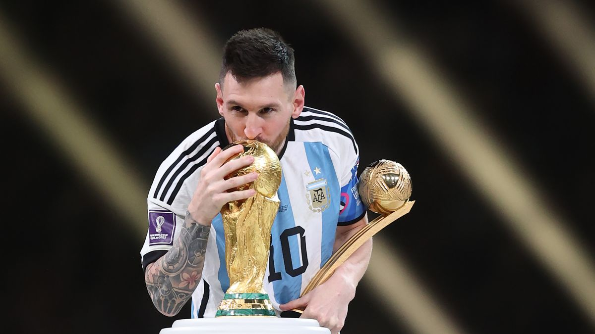

Headlines
INDIA'S INDEPENDENCE : BRITISH RULE ENDS
At the stroke of midnight, on August 15, 1947, India achieved freedom from more than two centuries of colonial rule after a multi-faceted struggle for independence comprising both non-violent and violent means.

‘Messianic Night’: The Headlines After Lionel Messi Lifts the 2022 World Cup
Lionel Messi's dream of winning the FIFA World Cup finally materialised on Sunday night at the Lusail Stadium with Argentina surviving a few anxious moments to register a fighting 4-2 penalty shoot win over defending.
A Summary and Analysis of Martin Luther King’s ‘I Have a Dream’ Speech
In his “I Have a Dream” speech, minister and civil rights activist Martin Luther King Jr. outlines the long history of racial injustice in America and encourages his audience to hold their country accountable to its own founding promises of freedom, justice, and equality.

Nearly 500 OpenAI staff threaten to resign; demand reinstating Altman
Nearly 500 OpenAI staff have threatened to quit unless all current board members resign and reappoint ex-CEO Sam Altman. In a letter to the board, 490 OpenAI employees, including CTO Mira Murati and COO Brad Lightcap, said that the firing of Altman had "jeopardized all of this work and undermined our mission and company" and that they would quit and join the ex-OpenAI CEO at Microsoft if the board did not resign.